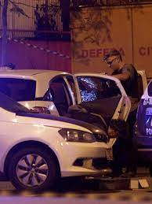

Na noite de 14 de março de 2018, a vereadora carioca Marielle Franco foi executada a tiros com seu motorista, Anderson Gomes, no Rio de Janeiro. O crime teve repercussão mundial. Marielle foi atingidapor 3 tiros na cabeça e um no pescoço e o motorista levou três tiros nas costas, os dois morreram na hora. vão se fazer 5 anos do acidente e ninguém descobriu quem mandou matar Marielle e o seu motorista foi preso
